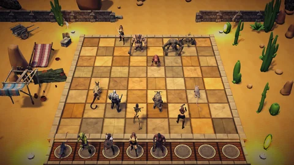
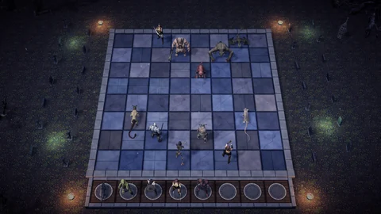

Arenas
The battlegrounds of the spire.
Warspire has 5 arenas. Each is a full setting built round the same board: its own paving, ground, scenery, lighting and weather.
 CourtyardA cobbled town square at dusk, ringed by market stalls and lamplight.Mood: Dusk
CourtyardA cobbled town square at dusk, ringed by market stalls and lamplight.Mood: Dusk GladeA forest meadow in daylight, with a stream curling round the board.Mood: Day
GladeA forest meadow in daylight, with a stream curling round the board.Mood: Day
DunesA sun-bleached desert ruin among cacti, boulders and distant mesas.Mood: Day FrostA snowbound fort yard under falling snow, walled in stone and ringed by pines.Mood: Day
FrostA snowbound fort yard under falling snow, walled in stone and ringed by pines.Mood: Day
CryptA graveyard by moonlight: headstones, candles and cold green spirit light.Mood: MoonlitHow the arena is chosen
You choose your own arena. On the title screen, before you press Find Match, the ARENA row has an arrow on each side: tap them to step through the 5 arenas and a last choice, RANDOM. The board behind the menu changes at once, so you see each one before you commit. A new player starts in Courtyard.
With RANDOM chosen, a different arena is rolled each time the title screen opens, which means once per match, and, while the game stays open, never the same one twice in a row. The row then shows which arena the roll picked.
The choice belongs to you alone. It is saved on your device and is never sent to the other players, so all 8 players in a match may each be looking at a different arena. Whichever you pick, you see every fight of the match there, your own and the ones you watch.
Picking an arena also switches the lighting to that arena's own mood. The SCENERY row under it changes the lighting on its own (Dusk, Day, Night, Moonlit, Lantern Festival, First Frost, Glass Storm, Aurora Night, Blood Moon), so any arena can be played in any light, and that choice is saved too. A rolled arena always arrives in its own mood and leaves your saved scenery alone.
Scenery moods
The lighting moods of the SCENERY row, and the arenas that start in each.
| Mood | The light | Arenas that start in it |
|---|---|---|
| Dusk | A low warm sun, long shadows and lamps already lit. | Courtyard |
| Day | A high white sun under a pale sky. The lamps barely show. | Glade, Dunes, Frost |
| Night | Blue moonlight under a dark sky, with the braziers and lamps burning at their brightest. | none |
| Moonlit | A bright cold moon over dark ground, so the board stays easy to read. | Crypt |
| Lantern Festival | none | |
| First Frost | none | |
| Glass Storm | none | |
| Aurora Night | none | |
| Blood Moon | none |